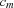
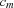
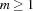
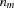
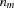
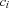
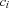

2 Lexical Syntax
A program text is a sequence of characters represented by integers following ISO 8859-1 [ISO87], also called ``Latin 1''. In this section, we describe how such a sequence is split into a sequence of words. Each word represents zero or more tokens such that the result is a sequence of tokens. We call this process tokenization. In this section, we give regular expressions for the different kinds of words and describe the resulting tokens.
Resolving Ambiguities
The splitting of a sequence of characters using these regular expressions is not unique. We use the usual left to right longest match tokenization obtaining either error or a unique sequence of tokens from a given sequence of characters. Longest match means that if two or more prefixes of the remaining character string are matched by (possibly different) regular expressions, we select the match that accepts the longest prefix. Note that the regular expressions are designed such that left to right longest match tokenization is unique.
Lexical Errors
When no regular expression matches a prefix of the remaining character string, we speak of a lexical error. Such an input sequence does not represent a valid Oz program.
2.1 Character Class Definitions
This section defines character classes used in the regular expressions given in the remainder of the chapter. Note that these regular expressions do not - on their own - define any splitting of the input into words.
We use NUL to denote the ISO character with code 0 and <any character> to denote the set of all ISO characters.
<upper-case letter> ::= A| ... |Z|À| ... |Ö|Ø| ... |Þ
<lower-case letter> ::= a| ... |z|ß| ... |ö|ø| ... |ÿ
<digit> ::= 0| ... |9
<non-zero digit> ::= 1| ... |9
<alphanumerical> ::= <upper-case letter> | <lower-case letter> | <digit> | _
<atom char> ::= <any character> - ( '|\| NUL )
<string char> ::= <any character> - ( "|\| NUL )
<variable char> ::= <any character> - ( `|\| NUL )
<escape character> ::= a|b|f|n|r|t|v|\|'|"|`|&
<octal digit> ::= 0| ... |7
<hex digit> ::= 0| ... |9|A| ... |F|a| ... |f
<binary digit> ::= 0|1
Pseudo-Characters
In the classes of words <variable>, <atom>, <string>, and <character> we use pseudo-characters, which represent single characters in different notations.
<pseudo char> ::= \<octal digit> <octal digit> <octal digit>| \(x|X) <hex digit> <hex digit>| \<escape character>
Pseudo-characters allow to enter any ISO 8859-1 character using octal or hexadecimal notation. Octal notation is restricted to numbers less than 256. The NUL character (ISO code 0) is forbidden. The pseudo-characters \a (= \007), \b (= \010), \f (= \014), \n (= \012), \r (= \015), \t (= \011), \v (= \013) denote special purpose characters, and \\ (= \134), \' (= \047), \" (= \042), \` (= \140), \& (= \046) denote their second component character.
2.2 Spaces and Comments
Spaces are tab (code 9), newline (code 10), vertical tab (code 11), form feed (code 12), carriage return (code 13), and blank (code 32).
A comment is:
a sequence of characters from
%until the end of the line or file,a sequence of characters within and including the comment brackets
/*and*/, in which/*and*/are properly nested, andthe character
?.
Spaces and comments produce no tokens. This means that they are ignored, except that they separate words form each other.
2.3 Keywords
<keyword> ::= andthen|at|attr|case|catch|choice| class|cond|declare|define|dis| div|else|elsecase|elseif|end| export|fail|false|feat|finally|from| fun|functor|if|import|in|local| lock|meth|mod|not|of|or|orelse| prepare|proc|prop|raise|require| self|skip|then|thread|true|try| unit|(|)|[|]|{|}| ||#|:|...|=|.|:=|^|[]|$| !|_|~|+|-|*|/|@|<-| ,|!!|<=|==|\=|<|=<|>| >=|=:|\=:|<:|=<:|>:|>=:|::|:::
Each keyword represents itself as token.
2.4 Variables
<variable> ::= <upper-case letter> { <alphanumerical> } | `{ <variable char> | <pseudo char> }`
A word of the form <variable> represents a variable token of the form 
variable, n+, where n+ is the sequence of characters that make up the word, including the possibly surrounding ` characters.
For example, the word Xs represents the token variable, 88 115 and the word `\n` represents the token variable, 96 10 96. Variable tokens are denoted by the terminal symbol <variable> in the following context-free grammars.
2.5 Atoms
<atom> ::= <lower-case letter> { <alphanumerical> } - <keyword> | '{ <atom char> | <pseudo char> }'
A word of the form <atom> represents an atom token of the form atom, n*, where n* is the sequence of characters that make up the word, excluding the possibly surrounding ' characters.
For example, the word atom represents the token atom, 97 116 111 109 and the word '\n' represents the token atom, 10. Atom tokens are denoted by the terminal symbol <atom> in the following context-free grammars.
2.6 Labels
<label> ::= ( <variable> | <atom> | true|false|unit)(
A word of the form <label> represents a sequence of two tokens. The first is a label token of the form variablelabel, n+, atomlabel, n* (similar to the corresponding tokens for words of the form <variable> and <atom>), truelabel, falselabel, or unitlabel. The second token is the keyword (. For example, the word Xs( represents the tokens variablelabel, 88 115 and (, and the word true( represents the tokens truelabel and (. The label tokens are denoted by the terminal symbols <variable label>, <atom label>, <unit label>, <true label>, and <false label> in the following context-free grammars.
2.7 Integers
<int> ::= [ ~] (0| <non-zero digit> { <digit> } )% decimal representation | [ ~]0{ <octal digit> }+% octal representation | [ ~]0(x|X) { <hex digit> }+% hexadecimal representation | [ ~]0(b|B) { <binary digit> }+% binary representation
A word of the form <int> represents an integer token of the form int, n, where n represents the integer for which <int> is the representation.
For example, the word ~159 represents the token int, -159, the word 077 the token int, 63, the word 0xFF the token int, 255, and the word ~0b11111 the token int, -31. Integer tokens are denoted by the terminal symbol <int> in the following context-free grammars.
2.8 Floats
<float> ::= [ ~] { <digit> }+.{ <digit> } [ (e|E) [~] { <digit> }+ ]
A word of the form <float> represents a float token of the form float, f, where f represents the floating point number for which the word is the decimal representation. The letters e and E both indicate the exponent to 10.
For example, the word ~1.5e2 represents the token float, -150.0. Float tokens are denoted by the terminal symbol <float> in the following context-free grammars.
The syntax of floats is implementation-dependent in that syntactically correct floats may be approximated by the compiler if they cannot be represented by the implementation.
2.9 Strings
<string> ::= "{ <string char> | <pseudo char> }"
The word "" represents the token atom, 110 105 108, which denotes the empty list nil. A word of the form " ... 
... ", where , represents a sequence of  tokens of the form
tokens of the form [  ... 
...  ], where the  represent integer tokens according to the ISO 8859-1 code of .
represent integer tokens according to the ISO 8859-1 code of .
For example, the word "ab" represents the sequence of tokens [ int, 97 int, 98 ].
2.10 Characters
<character> ::= &( <any character> - (\| NUL ) | <pseudo char> )
A word of the form <character> represents the integer token according to the code of the character denoted by the word without the & prefix.
For example, the word &a represents the token int, 97.